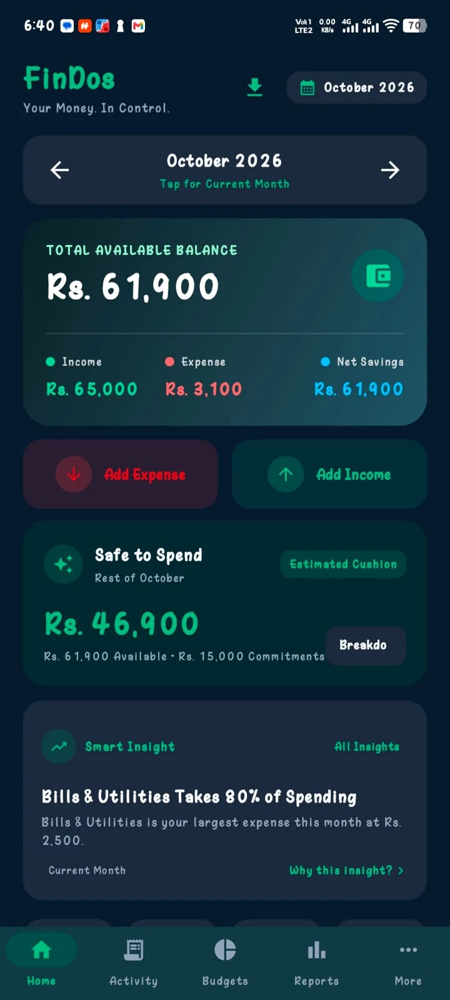

Frontend engineering
Responsive interfaces, reusable UI components, interactions, accessibility-minded markup and performance-focused implementation.
HTML5CSS / SCSSJavaScriptTailwind CSSjQueryGSAP
Hey, I'm Shakeel Dosani. A senior frontend & WordPress developer turning complex ideas into clean, high-performing digital experiences.
↘I care about the details you see — and the engineering you don't.
I'm a senior frontend and WordPress developer with hands-on experience building responsive websites, custom themes, flexible content systems and production-ready features. My work sits where thoughtful UI meets practical engineering.
From turning Figma designs into polished interfaces to developing custom WordPress functionality, WooCommerce experiences and reusable components, I enjoy solving the tricky parts that make digital products feel simple.
Outside client projects, I build and experiment with my own products through Dosani Labs ↗.
Not just a list of technologies. These are the problems I work on and the systems I build.
Responsive interfaces, reusable UI components, interactions, accessibility-minded markup and performance-focused implementation.
Tailored themes, ACF-powered content architecture, custom post types, taxonomies, templates and backend-to-frontend integrations.
Custom product experiences, checkout enhancements, dynamic storefronts and practical integrations that serve real business workflows.
Internal utilities, WordPress plugins, automation-minded workflows and independent software products built around genuine user needs.
A mix of independent products and real-world development disciplines. Every project is an opportunity to make something useful.

Your Money. In Control.
An Android personal finance app for everyday money management, combining income and expense tracking, accounts, budgets, savings goals, Udhar tracking and practical financial insights.
My independent home for software products, experiments and thoughtfully engineered digital tools — starting with FinDos.
My client-facing work includes custom WordPress builds, dynamic fundraising experiences, account interfaces, responsive site development, WooCommerce customization and plugin-level integrations. Client details and internal implementations are kept private where appropriate.
My approach combines visual precision with maintainable engineering and a strong focus on getting things shipped.
Start with the design, requirements, content structure and the actual user journey — not assumptions.
Translate ideas into clean, responsive interfaces and flexible systems with sensible component structure.
Test across screen sizes, improve interactions, fix edge cases and make the experience feel complete.
Whether it's a custom WordPress build, a polished frontend or an interesting digital idea — I'd love to hear about it.
LET'S TALK ABOUT IT↗shakeeldosani02@gmail.com